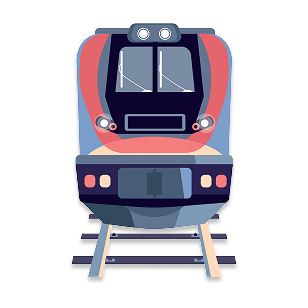
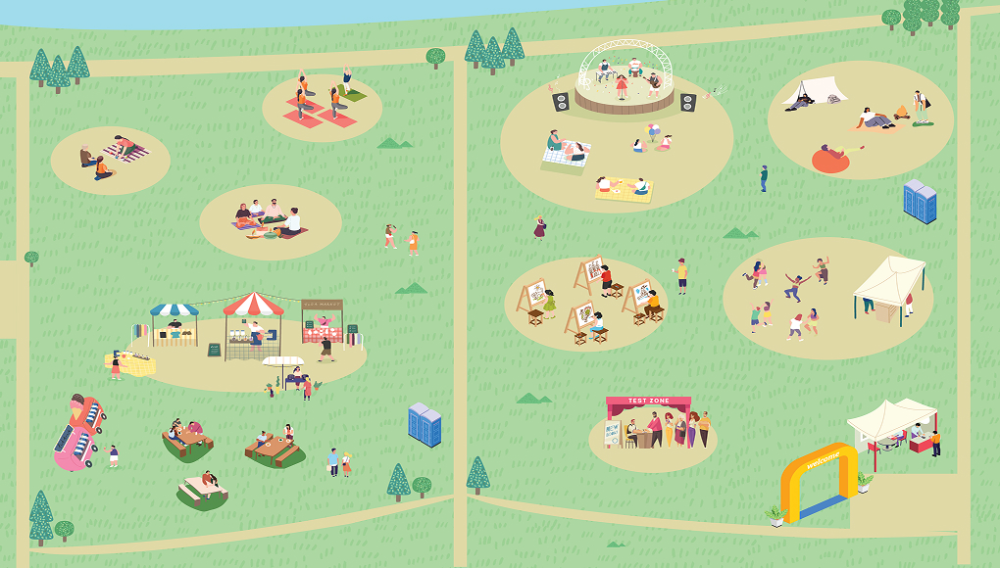

.png)

VISIT
찾아오시는 길
삼락생태공원 · 삼락공원 일대 ｜ 부산광역시 사상구 낙동대로 1231
삼락생태공원 정류장 하차
주요 노선 : 123번, 126번
하차 후 행사장까지 도보 약 5~7분
르네시떼 정류장 하차
주요 노선 : 110번, 123번, 126번, 77번, 138-1번
하차 후 강변나들교 방향 도보 약 15분
서부시외버스터미널·사상역 정류장 하차
주요 노선 : 8, 15, 31, 33, 61, 62, 77, 110, 138-1, 160, 161, 169, 186, 1005
사상역 3번 출구 방향 이동 후
강변나들교를 지나 행사장까지 도보 약 20~25분

부산 도시철도 2호선 사상역 하차
사상역 3번 출구 방향으로 이동 후
강변나들교를 지나 행사장까지 도보 약 20~25분
환승 이용 안내
사상역 인근 정류장에서 삼락생태공원 또는 르네시떼 방면 버스로 환승 가능합니다.
행사 당일에는 도로 혼잡이 예상되므로 여유 있게 이동해주세요.
내비게이션 검색
'삼락생태공원' 또는 '부산광역시 사상구 낙동대로 1231'을 검색해주세요.
주차 안내
공원 내 주차 공간을 이용할 수 있습니다.
다만 행사 당일에는 혼잡이 예상되므로 대중교통 이용을 권장합니다.
현장 안내
자가용 이용 시 현장 안내 표지와 스태프의 안내에 따라 이동해주세요.
페스티벌 가이드 맵

INFORMATION
-
1
웰니스 테스트 ZONE
-
2
사운드 힐링 ZONE
-
3
감정 드로잉 ZONE
-
4
피크닉 ZONE
-
5
인디 라이브 ZONE
-
6
푸드 ZONE
-
7
플리마켓 ZONE
-
8
아로마 테라피 ZONE
-
9
슬로우 티타임 ZONE
-
10
그룹 요가 ZONE
{kind=link}
REFLOW WELLNESS FESTIVAL REFLOW WELLNESS FESTIVAL REFLOW WELLNESS FESTIVAL REFLOW WELLNESS FESTIVAL REFLOW WELLNESS FESTIVAL REFLOW WELLNESS FESTIVAL REFLOW WELLNESS FESTIVAL REFLOW WELLNESS FESTIVAL
Copyright© RE;FLOW WELLNESS FESTIVAL All rights reserved.